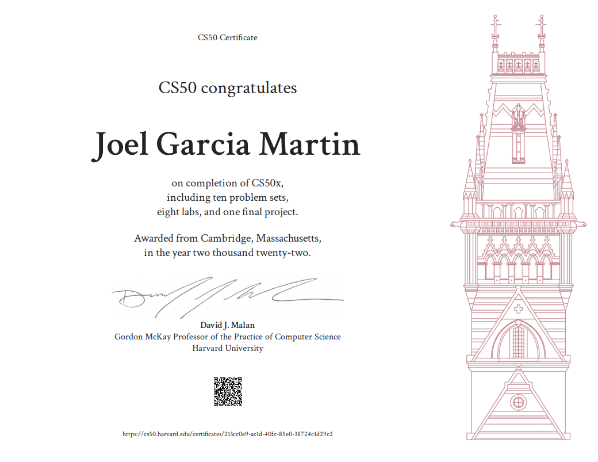
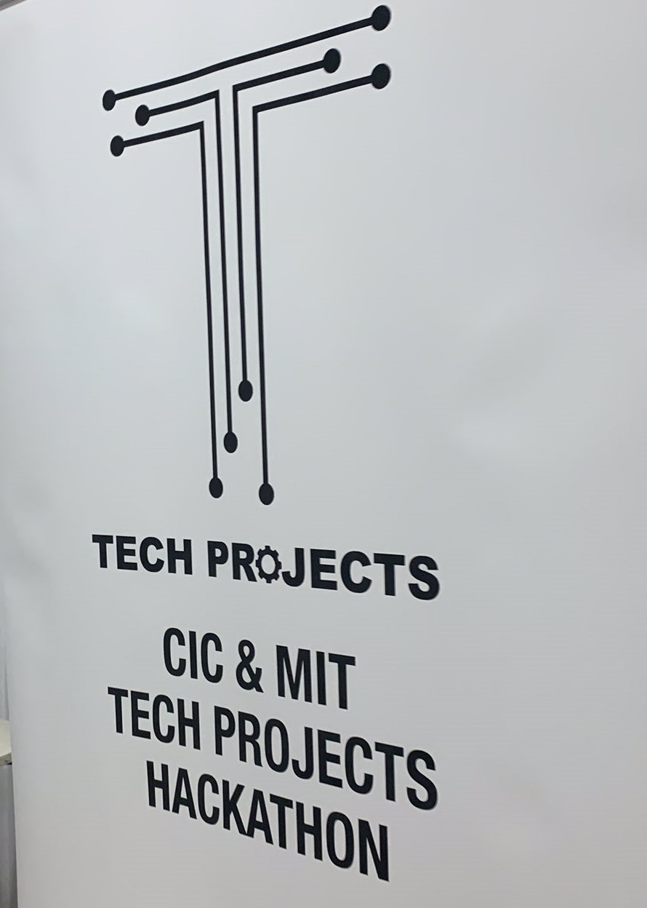
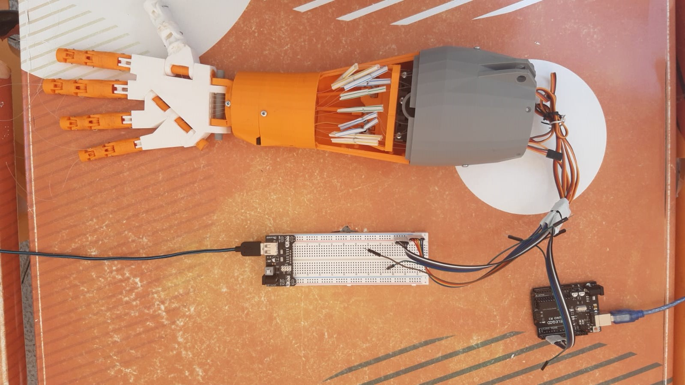
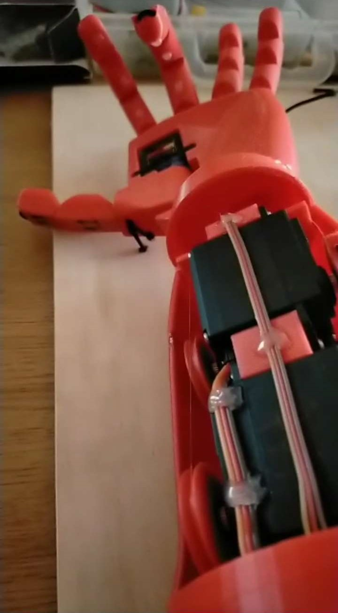
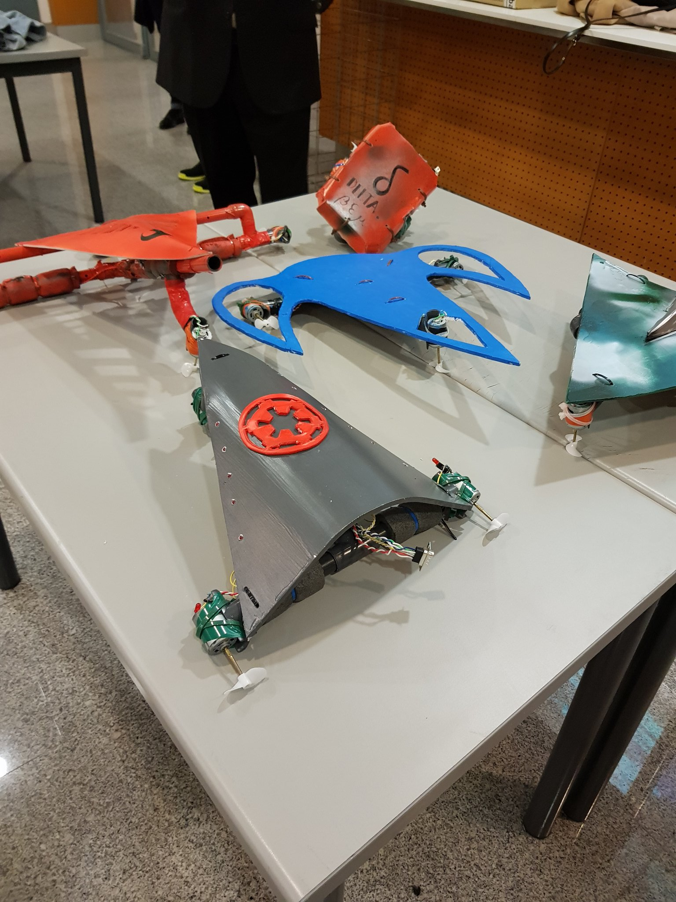

Timeline
2022

Harvard's CS50
During my first semester in college I decided to take Harvard's CS50 course and I completed it by December 2022.
This course gave me a solid coding basis and tought me about the fundamentals as until then I had learnt to code with my projects and had never taken any CS Course
2022
Joining GRASS Rover Club
In my second month of Collage I decided to join and was Accepted at the GRASS Rover Student Club at my University.
This Group is building a rover to compete at the European Rover Challenge and I'm part of the Coding Department of the Club.
2022

MIT Engineering Design Workshop 2022
The MIT Engineering Design Workshop 2022 was a month long EDW where people from around the world came together to build, design and prototype ideas at the Edgerton Center at MIT.
During this month long stay we got to do different fun activites related to engineering and to get to know each other, like building and launching Water Rockets, using a High Speed camera to take photos of ourselves popping water ballons.
The project that we built for that EDW was a foot piano, that had nine notes (A, B, C, D, E, F, F#, G) and that could be arranged in any way to play any song we wanted.
Our group consisted of Three Americans (Hrushi, Harri, Archim), two italians (Emilia & Clara) and two Spaniards (Oriol and me), so to overcome our language barriers also became a fun challenge.
2022

Shaking Hands Overseas Demo
After months of work we finally where able to move our robotic hand with a glove built by LucasVR, who is the creator of the Lucid Gloves, and who from 4-409 at MIT was able to move our hand from the other side of the world.
2022

Hackathon MIT&CIC 2022
This hackathon was my first one as a mentor instead of as a student. So instead of building and designing a project I mentored other students how to do it and give them advice or a new prespective.
2021

Engineering Design Workshop 2021
Every Summer, the MIT Edgerton Center organizes its Engineering Design Workshop for rising ninth through 12th grade students.
During the EDW 2021 we continued our project Shaking Hands Overseas and moved a finger of our robotic hand from the other side of the ocean.
This EDW we built our third and last prototype and designed all the infrastructure necessary to move the hand from any part of the world.
2021

Hackathon MIT&CIC 2021
During the 2021 Hackathon organized by Fundació CIC and The MIT Edgerton Center, we built and tested a robotic hand which could be moved from the other side of the word.
This project, called Shaking Hands Overseas was started during this Hackathon by Marti Vinyolas, Eduard Lleget and myself and took a little over 6 months to get it working.
During this hackathon we 3D printed and tested our first and second of three prototypes that we would eventually build.
2020

Hackathon MIT&CIC 2020
The 2020 Hackathon organized by Fundació CIC and The MIT Edgerton Center consisted on the building, prototyping and testing of our own ROV (Remote Operated Vehicle).
From the design to the wiring, we designed and built our own with help and advice from mentors from MIT, who where students at the time.
2019
Hackathon MIT&CIC 2019
The 2019 Hackathon was my first contact into engineering by the Edgerton Center, where I got to solve some fun puzzles and challenges with my friends.